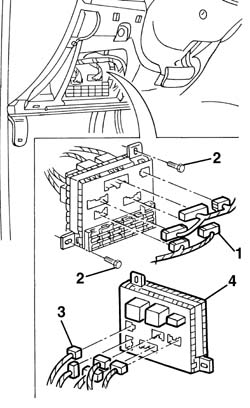

5505A10 electrical junction unit - r+r
- Path
- Procedures > 55 ELECTRICAL EQUIPMENT > 5505 ELECTRICAL CIRCUIT FOR INSTRUMENTS/INDICATORS > 5505A multi-function components > 5505A10 electrical junction unit - r+r
- Kind
- repair procedure (removal / refitting; the operation number is the code)
- Applies to
- all engines; all production periods
- Interactive page
- https://sloeber94.github.io/elrnDB-a156/en/#/3238378
Applies to: all engines; all production periods
Applies to: all engines; all production periods
 Removing
Removing
 Refitting
Refitting1. Disconnect electric connections on front side.
 | Name | Connector |
|---|---|---|
- | Junction unit |
2. Unscrew screws.
3. Slighlty move electric junction unit out of place and disconnect electric connection on rear side.
4. Remove electric junction unit.

Applies to: all engines; all production periods
Refitting
RemovingCheck electric junction unit is not damaged and, if necessary, check internal connections.
Position electric junction unit.
Connect rear electric connections.
Tighten screws.
Connect front electric connections.
Test electric system functionality.